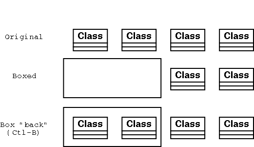
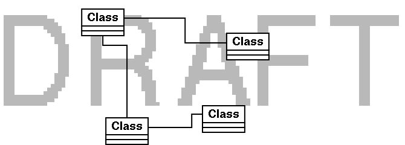
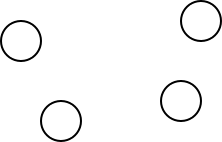

Suppose we have four UML "class" objects, and want to draw a box around two of them. Doing so leaves the box on top and obstructs view of the two boxed classes. Putting the box in the background solves the problem.
Putting an object in the background is done by first selecting it, and then:

Now suppose we have a common background (e.g., project logo) and want to build our diagram on top of that. It is no longer convenient to do this object by object. Instead we want to establish the layers in advance and use them over time.
If you are familiar with Gimp layers, you are in business -- it is the same mechanism. Otherwise, listen carefully.
When you start a new diagram, after doing page setup, select right-click...Objects...layers. This gives:
Click on the "new layer" icon (page with corner turned down), and you will get a "New layer". It is automatically placed above the Background layer. Click on the layer's name to select it. Once selected, you can move it relative to the other layers using the up and down arrows. Of course you should leave the Background layer at the bottom of the stack.
Clicking on the eyeball next to a layer toggles whether or not it is visible in the diagram. Generally, you build each layer separately, with just it visible, but turn on all layers occasionally to check alignment.
For our example, we put a text object which says "DRAFT" on the background layer. We make this text object grey using the color selector. Then we go to the new layer and make a diagram. Making both layers visible gives:

Suppose we have several objects roughly aligned:

We could very carefully drag them around to get them aligned. But a better approach is to use the alignment functions. Select the almost-vertically-aligned circles. Right-click to get the menu, then...Objects...Horizontal...center. This moves the objects horizontally until their centers are aligned vertically.
Yes, it is a bit confusing: To align on a vertical axis, you have to select horizontal, because that is the axis on which the movement takes place.
Similarly, to align objects along a single horizontal axis, you select Objects...Vertical...center. After aligning groups vertically and horizontally, we get:

The obvious ways to select are:
But you might want something fancier. In that case, Right-click to get the menu and then Select.... This gives the dialog:

For example, applied to this diagram, after selecting the "A" object:

NOTE: If I ever figure out what the check boxes do, I'll let you know.
Dia comes with several shape libraries. It is also designed to allow you to add your own.
These libraries are of course domain-specific, so their use should be described in other contexts (e.g., UML should be discussed in a tutorial on software engineering). Here we will concentrate on the mechanics of using the shape libraries.
The libraries are saved in the share dir for wherever dia is installed. For example if which dia gives /usr/bin/dia, then we want to look at /usr/share.dia:
/usr/share/dia/
dia_logo.png Dia's logo
shapes/
Flowchart/ objects, in paired files (icon and shape)
magdisk.xpm icon
magdisk.shape shape description
...
sheets/ object descriptions in various languages (XML)
ER.sheet
Flowchart.sheet
UML.sheet
...
For example, if we are interested in the Flowchart library, and specifically in the magnetic disk object, we find the magdisk.shape file:
<?xml version="1.0"?>
<shape xmlns="http://www.daa.com.au/~james/dia-shape-ns"
xmlns:svg="http://www.w3.org/TR/2000/03/WD-SVG-20000303/DTD/svg-20000303-stylable.dtd">
<name>Flowchart - Magnetic Disk</name>
<description>Magnetic Disk</description>
<icon>magdisk.xpm</icon>
<connections>
<point x="0" y="2"/>
<point x="2.5" y="0.4375"/>
<point x="5" y="0"/>
<point x="7.5" y="0.4375"/>
<point x="10" y="0"/>
<point x="0" y="2.5"/>
<point x="0" y="7.5"/>
<point x="0" y="5"/>
<point x="0" y="10"/>
<point x="10" y="2.5"/>
<point x="10" y="5"/>
<point x="10" y="7.5"/>
<point x="10" y="10"/>
<point x="2.5" y="11.5625"/>
<point x="5" y="12"/>
<point x="7.5" y="11.5625"/>
</connections>
<textbox x1="0" y1="4" x2="10" y2="10"/>
<svg:svg width="10" height="12">
<svg:path d="M 0,2 c 2,-1.5 3,-2 5,-2 s 3,0.5 5,2 v 8
c -2,1.5 -3,2 -5,2 s -3,-0.5 -5,-2 v -8 z
M 0,2 c 2,1.5 3,2 5,2 s 3,-0.5 5,-2" style="fill: default"/>
</svg:svg>
</shape>
Notice:
<object name="Flowchart - Magnetic Disk">
<description xml:lang="no">Magnetdisk</description>
<description xml:lang="fr">Disque Magnétique</description>
<description xml:lang="de">Magnetdisk</description>
<description>Magnetic Disk</description>
</object>
Thus, we get language-specific tooltips.
You can make your own sheets/shapes by following the above patterns.
Some shape libraries (e.g., UML) have associated processing and therefore are not just .shape files. To make your own library-with-processing requires going into the C code, and that is beyond the scope of this tutorial. (Perhaps embedded python will be supported in the future, simplifying even this adventure.)